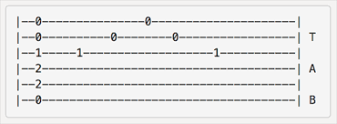

Chord
Learn how to play chord and how to build a chord. it is an essensial skill for any guitar players. There are a lot of guitar chord type and it is impossible yo memorize all of it. it is better to understand themScaling
Learn any type of scaling and find your own tasty licks. Scaling helps a lot to make your own licks and perfectly useful for writing songs.
